Traven Blaney is a technical-based, generalist creator with experience in programming, structural engineering, health care, and graphic design. He graduated in 2020 with a B.Eng in Civil Engineering from McGill University.
Having spent multiple summers as an undergraduate student research in biomedical engineering, he garnered significant experience in programming in the Matlab (Mathworks) environment.
In his personal time, Traven has always shows a strong aptitude for artistic production in the form of graphic illustrations, and creating music. More recently, he has devoted much of his spare time to developing a video game as an amalgemation of his skillset.
Click the download link below to view Traven's professional and academic history.
The following figures and associated captions are pulled directly from my time spent as an undergraduate researcher at the University of Alberta (2018), and the University of Calgary (2019). The examples of work shown below
emphasise my programming skills in Matlab (Mathworks, v. 2019b), present examples of technical writing and underlying graphical development skills, as well as my ability to conduct technical analyses of results in an academic setting.
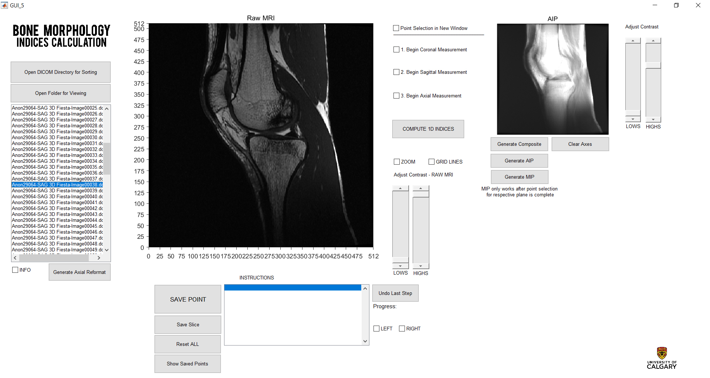
Figure 1: A custom software was developed in Matlab that functions as a graphical user interface (GUI), to characterize the bony morphology of the knee joint by estimating certain architectural knee joint features using established scientific methods.
Essentially, the user is prompted through a point-selection process of anatomical landmarks, and certain measures (distances, ratios and angles) are output into an Excel file.
This figure presents the main window of the GUI, and it's many associated features. This project was largely self-directed, and all code contributing to the program is original.
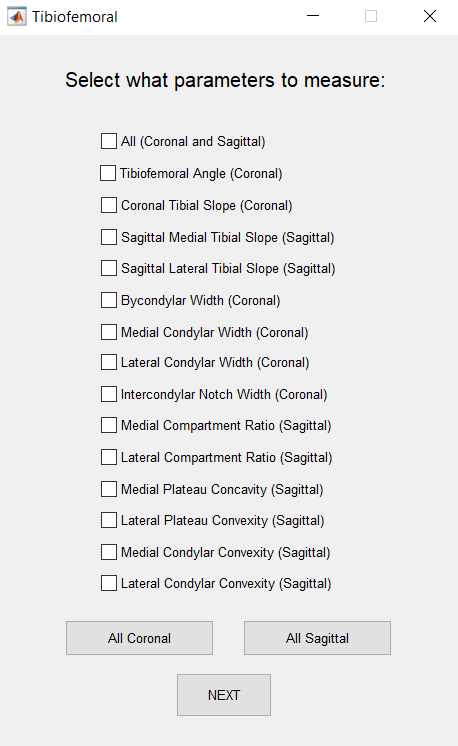
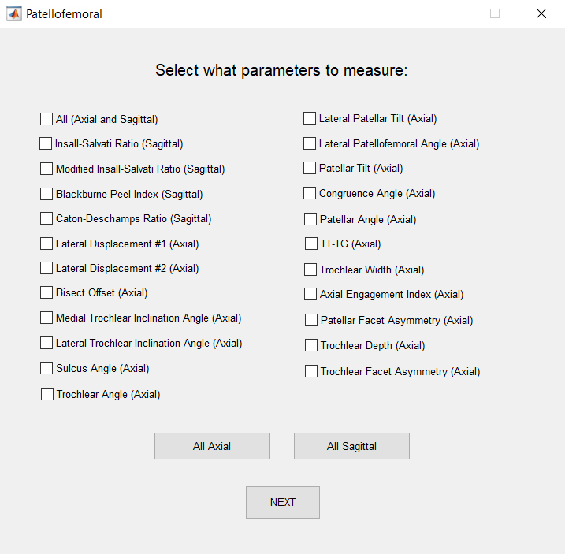
Figure 2: Presents the knee joint architectural features that the custom software calculates. The user of the code has the ability to select any subset of parameters for the tibiofemoral, or patellofemoral joint.
These features were found from relevant scientific methods (articles), where they were used to assess the relationship between knee joint morphology and injury and/or osteoarthritis.
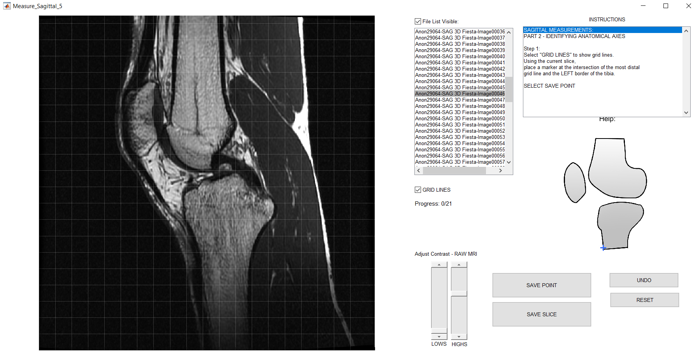
Figure 3: Presents the window used to walk a user through an anatomical point-selection process of key physiological landmarks, which are then used to calculate the aforementioned knee joint architectural features.
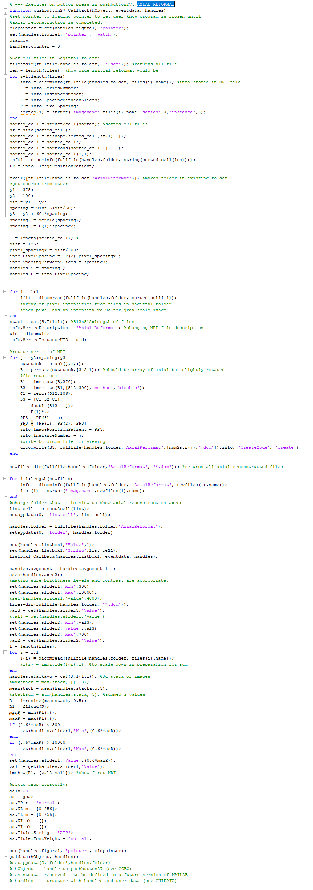
Figure 4: Presents an example of the code that is used to create an "Axial Reformat" - using MRI slices in the Sagittal viewing plane to recreate MRI slices in the Axial plane by reformatting the pixel intensity data.
Results:
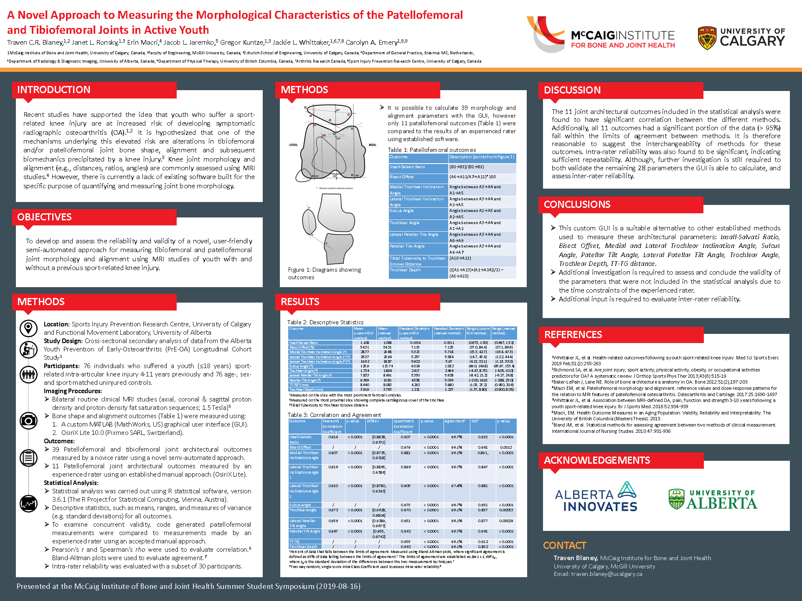
Figure 5: Presents a poster that was developed in 2019, while I was an undergraduate student researcher at the University of Calgary. This poster was developed for the McCaig Summer Student Symposium, to present the results
of my research over the course of the summer to fellow students (undergraduate, master's, PhD), as well as professors in related public health disciplines. Demonstrating not only my ability to convey scientific results, this poster also presents
skills in graphic design.
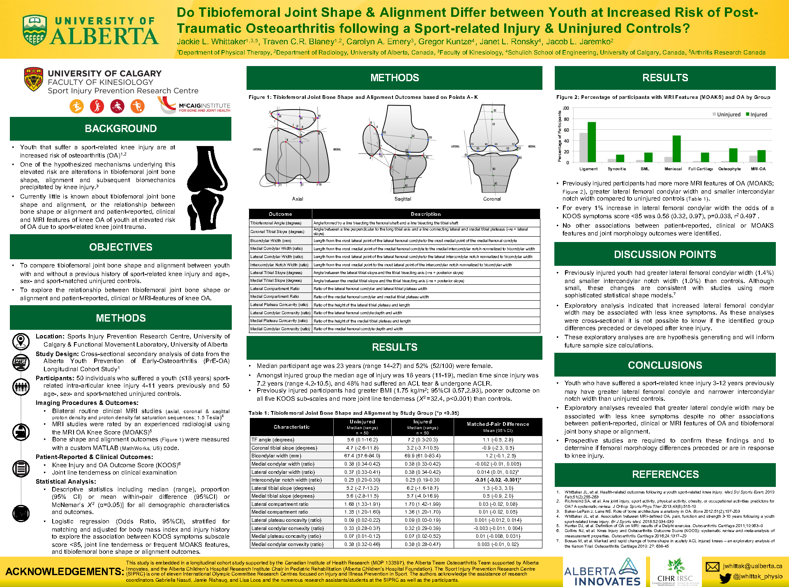
Figure 6: Presents a poster that was developed in 2018, which was accepted and presented at the Osteoarthritis Research Society International Congress in May 2018 - using results from my research in the summer of
2018 at the University of Alberta.
Futhermore, the results summarized in Figure 6 were published as an abstract at the 2018 OARSI World Congress on Osteoarthritis. Click the following link to view this abstract:
The majority of the following examples of work were completed during the "Capstone Design Project" in my final year as a member of McGill's Undergradute Civil Engineering program. My role within the interdisciniplary team was modelling expert - the
following renderings were thus created for the purpose of structural analysis. My team was provided with basic architectural drawings for a theoretical sports complex structure, from which 3D models were subsequently developed. These models are shown to highlight my ability
to think abstractly, and render complex 3D models in multiple different software environments.
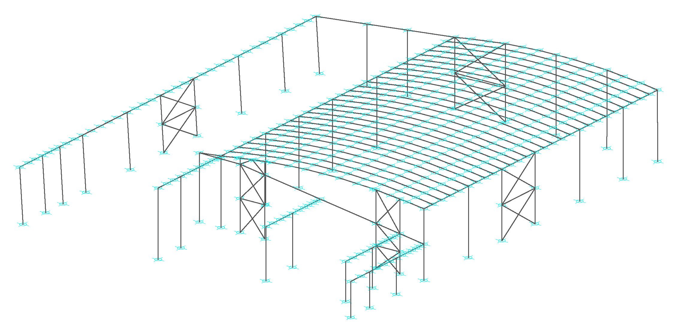
Figure 1: The structure was first modelled in 3 dimension in Autocad (Autodesk), as it is slightly more user-friendly for developing accurate models vs. standard structural analysis software. This figure
presents the structural members in Autocad.
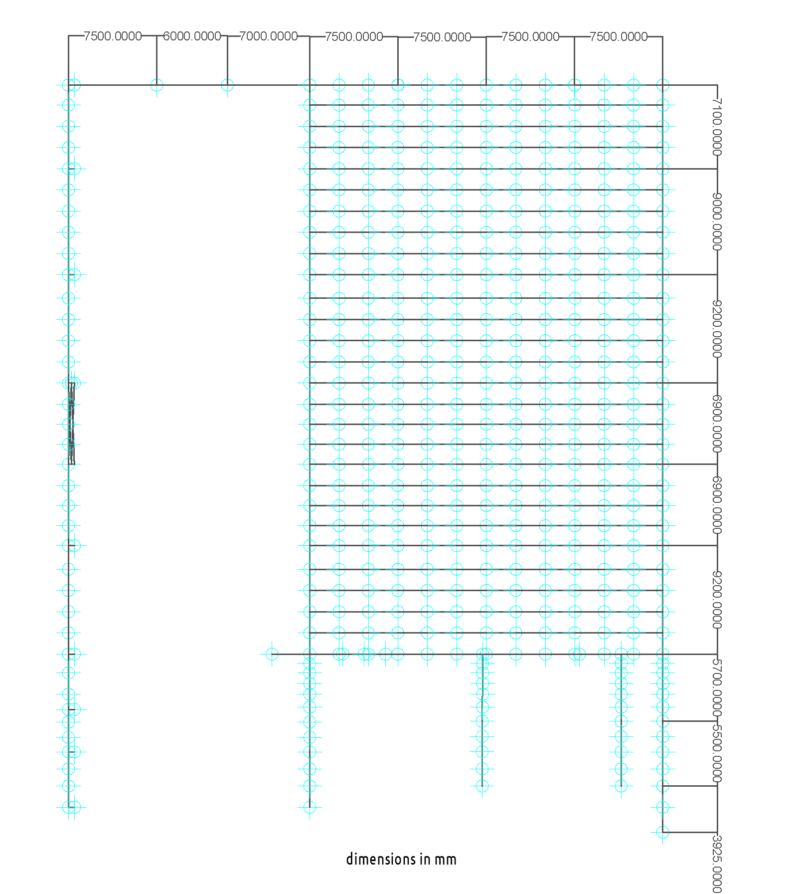
Figure 2: Presents the dimensions of the structure in mm, showing the size of the building.
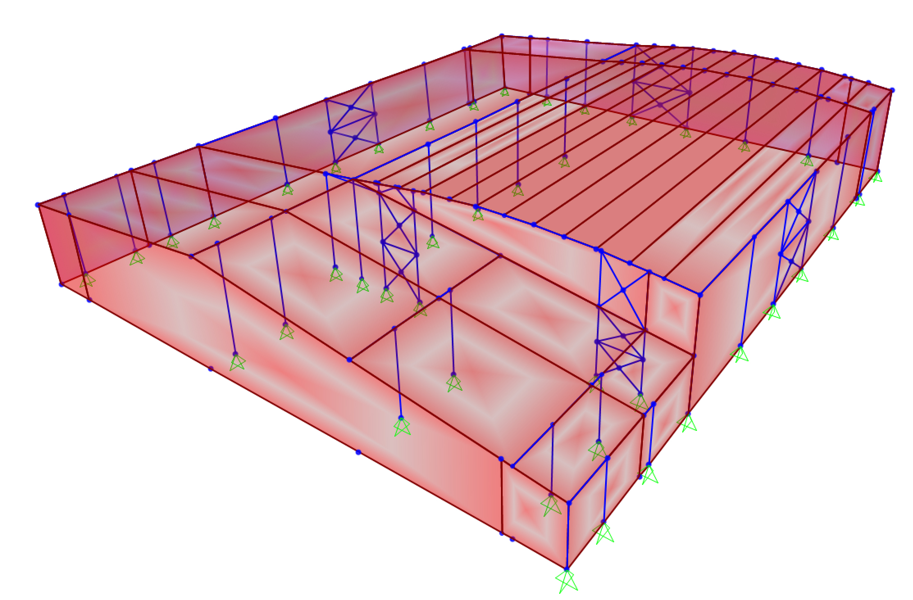
Figure 3: Presents the SAP2000 model (structural analysis software) and structural engineering design of the sports complex building. This model was created by importing the Autocad model, and adding diaphragms for the floors and panels to emulate proper behaviour under loading.
This was the model used to perform structural analysis of lateral loading scenarios (wind, earthquake).
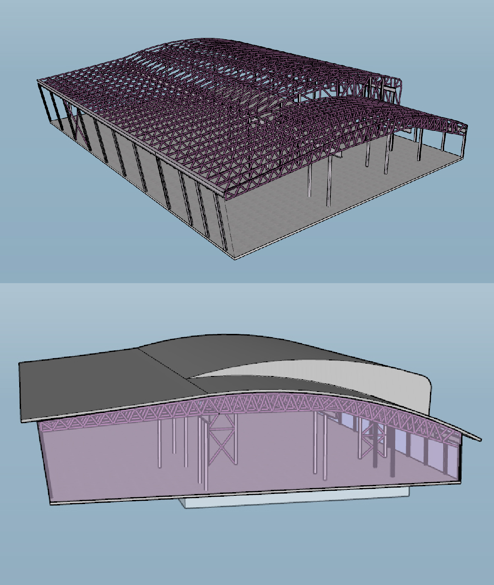
Figure 4: The structure was also modelled in Google Sketchup for presentational purposes, as it provides a more accurate depiction of what the actual structure would look like.
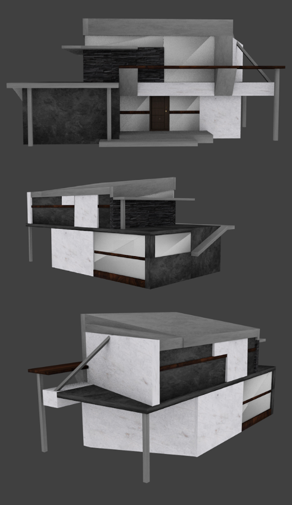
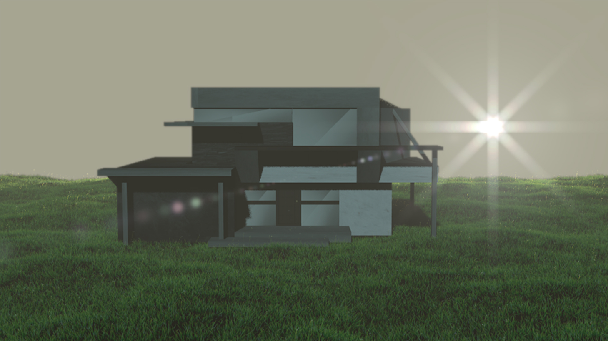
Figure 5: Presents an original structural concept of a modern residential house based on my personal interest in architecture. These 3D models were created using Blender.
In addition to the modelling, an example of my technical writing ability with relation to structural engineering can be downloaded below. This report assesses the potential
structural engineering design options for the George Massey Tunnel replacement project in Richmond, BC.
Although currently in-progress, the following section serves to present the development of a video game, using C# and Unity. This is a personal and self-directed project, where I am developing all orginal code, art (animations), music and storyline for a
fantasy-based, pixel-art (sprites) 2D game. Still in its early stages, this page presents an overview of the current state of the project. Most of the work completed thus far has been programming-related, but I am now moving on into the artistic design process. Wihout going into extensive detail,
the game will be of a role-playing nature, with an open world to explore and interact with NPCs. There will also be crafting and building functionalities in alignment with my interest in structural engineering.
The features added to the game so far are as follows: Character and camera movement, inventory/equipment/attack UI systems, basic enemy AI behaviour and pathfinding, save/load system, health systems for player and enemies, basic NPC AI behaviour.
Click the following button to download an example of C# code, which details one aspect of the UI inventory system. This system has many other associated secondary scripts, that when together function as a modifiable inventory where the main
player can interact with items in the world and equip weapons, armor, and trinkets.
Figure 1: This GIF shows the general aesthetic of the game. Although still in the preliminary design stages, some animations and environment design has been completed and is shown here.
Below are some additional animations and graphics for the game. I apologize for the watermakrs, they are to ensure that these graphics are not copied and used elsewhere as this is a public website.
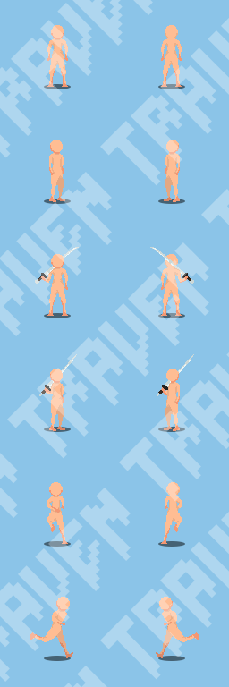
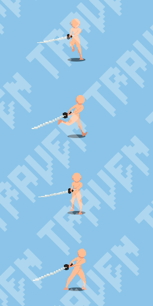
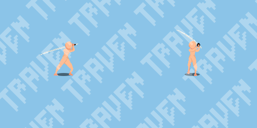
Figure 3: Presents base character animations, from which outfits and other customizations will be incorporated.
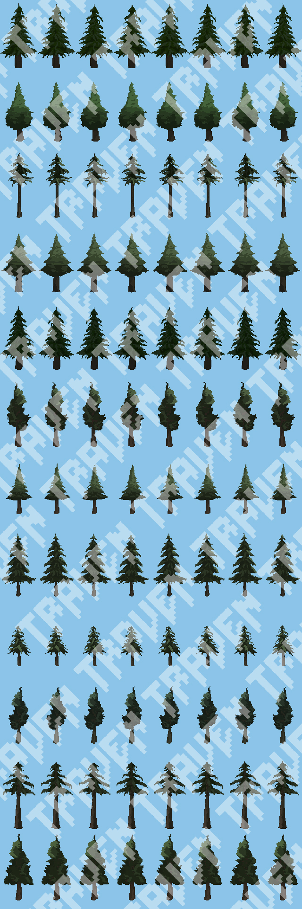
Figure 4: Example spritesheet, containing some idle animations of trees.
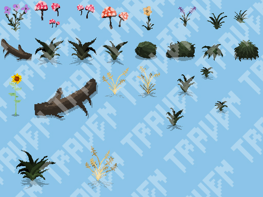
Figure 5: Example of different ground cover items.